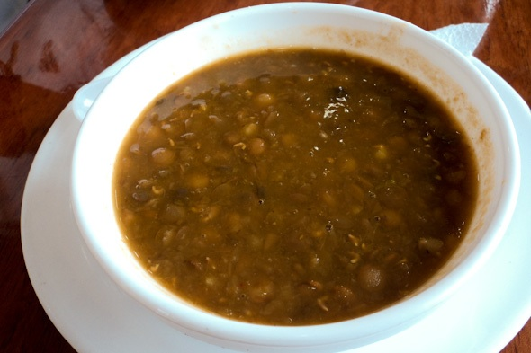

Menestra es menester! (Menestra is Essential)

Description
Menestra is basically a bean stew, but much better than you're thinking. You can use virtually any type of bean to make this dish and it comes out delicious every time. My personal favorite are lentils, but a good canary bean or red bean will make a hearty menestra fit for a king.
For this recipe, we will use canary beans (frijoles canarios). They are commonly eaten in the Ecuadorian costal region. They're abundant and very cheap. A big pot of these beans is a very economic option for large families and it pairs excellently with our Ecuadorian White Rice recipe here on our site. Try them both together with a meat of your choice and some patacones, you will not be sorry!
Ingredients
- 1 Cup Canary Beans
- 1/2 Red Onion, diced
- 4 Tbsp Butter
- 6 Cups Water
- Salt to taste
- 2 Tbsp Oil or Achiote
- 2 Cloves of Garlic
- 1 Tbsp Cumin
- 1/2 Cup Queso Fresco or Your Favorite Latin American Style White Cheese
Steps
- In a large pot, add water and cook beans on medium/high heat until tender. If water has reduced signicantly, add water until beans are completely covered again.
- Add 2 Tbsp butter to a frying pan, add onion and garlic and sautee until onion is transparent and garlic is fragrant.
- Transfer the onion and garlic into the pot with the beans. Add cumin. Let simmer until a stew begins to form (the liquid should become thicker than water).
- Once beans are thickened, add salt to taste and remaining 2 Tbsp butter. Serve and enjoy!